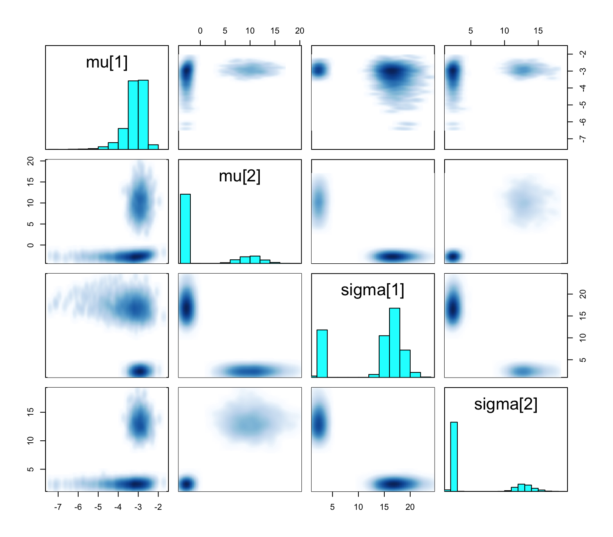
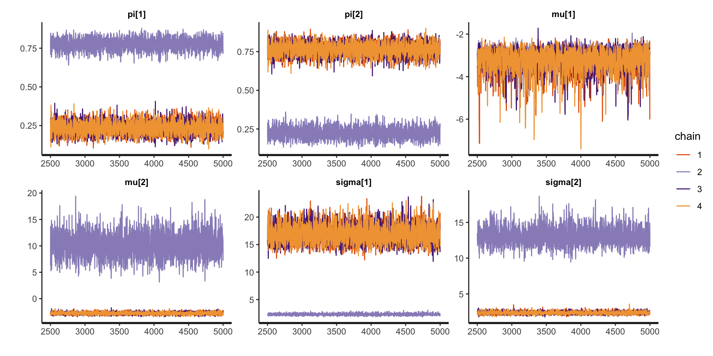
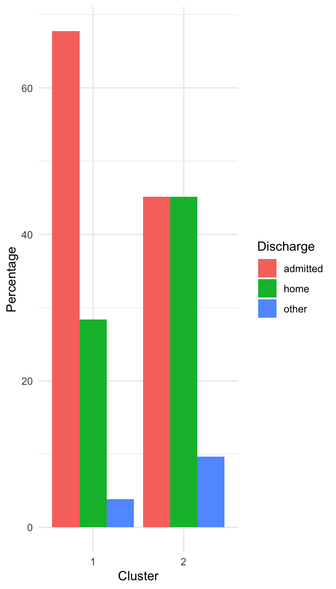
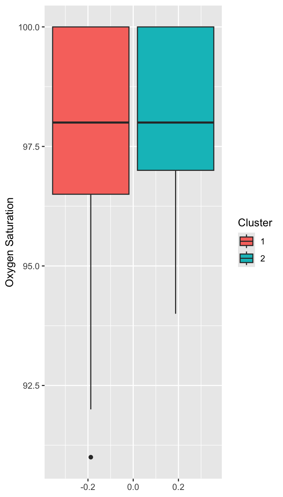

Prof. Sam Berchuck (developed with Braden Scherting)
Apr 08, 2025
Learning Objectives
We will introduce the basic mixture modeling framework as a mechanism for model-based clustering and describe computational and inferential challenges.
Variations of the popular finite Gaussian mixture model (GMM) will be introduced to cluster patients according to ED length-of-stay.
We present an implementation of mixture modeling in Stan and discuss challenges therein.
Finally, various posterior summaries will be explored.
Finding subtypes
Revisiting data on patients admitted to the emergency department (ED) from the MIMIC-IV-ED demo.
Can we identify subgroups within this population?
The usual setup
Most models introduced in this course are of the form:
\(f\) is the Gaussian density function, and \(\boldsymbol{\theta}_i(X_i)=(X_i\beta, \sigma^2)^\top\)
Binary classification:
\(f\) is the Bernoulli mass function, and \(\boldsymbol{\theta}_i(X_i)=\text{logit}(X_i\beta)^{-1}\)
Limitations of the usual setup
Suppose patients \(i=1,\dots,n\) are administered a diagnostic test. Their outcome \(Y_i\) depends only on whether or not they have previously received treatment: \(X_i=1\) if yes and \(X_i=0\) otherwise. Suppose the diagnostic test has Gaussian-distributed measurement error, so \[Y_i\mid X_i \sim N(\alpha + \beta X_i, \sigma^2).\] Now, suppose past treatment information is not included in patients’ record—we cannot condition on\(X_i\). Marginalizing, \[\begin{align*}
f(Y_i) &= P(X_i=1)\times N(Y_i\mid \alpha + \beta, \sigma^2) \\
& +P(X_i=0)\times N(Y_i\mid \alpha, \sigma^2).
\end{align*}\]
Limitations of the usual setup
n <-500; mu <-c(1,4.5); s2 <-1x <-sample(1:2, n, T); y <-rnorm(n, mu[x], sqrt(s2))ggplot(data.frame(y = y), aes(x = y)) +geom_histogram() +labs(x ="Y", y ="Count")
Limitations of the usual setup
fit <-lm(y ~1)ggplot(data.frame(residuals = fit$residuals), aes(x = residuals)) +geom_histogram() +labs(x ="Residuals", y ="Count")
Normality of residuals?
Mixture Model
Motivation for using a mixture model: Standard distributional families are not sufficiently expressive.
The inflexibility of the model may be due to unobserved heterogeneity (e.g., unrecorded treatment history).
This mixture is comprised of \(k\) components indexed by \(h=1,\dots,k\). For each component, we have a probability density (or mass) function \(f_h\) and a mixture weight \(\pi_h\), where \(\sum_{h=1}^k \pi_k=1\).
When \(k\) is finite, we call this a finite mixture model for \(Y_i\).
It is common to let, \[f_h(Y_i) = f(Y_i\mid \boldsymbol{\theta}_h).\]
The component densities share a functional form and differ in their parameters.
Gaussian Mixture Model
Letting \(f_h(Y_i) = N(Y_i\mid \mu_h, \sigma^2_h)\) for \(h=1,\dots,k\), yields the Gaussian mixture model. For \(Y_i\in\mathbb{R}\), \[f(Y_i) = \sum_{h=1}^k \pi_h N\left({Y}_i\mid \mu_h, \sigma^2_h\right)\]
For multivariate outcomes \(\mathbf{Y}_i\in\mathbb{R}^p\),
Notice, both means \(\mu_h\) and variances \(\sigma^2_h\) vary across clusters.
Generative perspective on GMM
To simulate from a \(k\)-component Gaussian mixture with means \(\mu_1,\dots,\mu_k\), variances \(\sigma_1^2,\dots,\sigma^2_k\), and weights \(\pi_1,\dots,\pi_k\):
Sample the component indicator \(z_i\in \{1, \dots,k\}\) with probabilities: \[P(z_i=h) = \pi_h \iff z_i \sim \text{Categorical}(k, \{\pi_1,\ldots,\pi_k\}).\]
Given \(z_i\), sample \(Y_i\) from the appropriate component: \[\left(Y_i\mid z_i =h\right) \sim N\left(\mu_h, \sigma^2_h\right).\]
Generative perspective on GMM
n <-500mu <-c(1, 4.5)s2 <-1# implicit: pi = c(0.5, 0.5)z <-sample(1:2, n, TRUE)y <-rnorm(n, mu[z], sqrt(s2))
This is essentially the code used to simulate the missing treatment history example.
Marginalizing Component Indicators
The label \(z_i\) indicates which component \(Y_i\) is drawn from—think of this as the cluster label: \(f\left(Y_i\mid z_i=h\right) = N\left(Y_i\mid \mu_h,\sigma^2_h \right).\)
But \(z_i\) is unknown, so we marginalize to obtain:
Component indicators \(z_i\) are discrete parameters, which cannot be estimated in Stan. As before, suppose \(f(Y_i) = \sum_{h=1}^k \pi_h N\left(Y_i\mid \mu_h,\sigma^2_h \right)\).
Inference for Stan model: anon_model.
4 chains, each with iter=5000; warmup=2500; thin=1;
post-warmup draws per chain=2500, total post-warmup draws=10000.
mean se_mean sd 2.5% 97.5% n_eff Rhat
pi[1] 0.37 0.17 0.24 0.16 0.83 2 6.35
pi[2] 0.63 0.17 0.24 0.17 0.84 2 6.35
mu[1] -3.17 0.09 0.51 -4.49 -2.49 33 1.05
mu[2] 0.45 3.96 5.69 -3.17 13.08 2 5.14
sigma[1] 13.25 4.48 6.46 2.09 20.11 2 4.97
sigma[2] 5.03 3.28 4.68 2.03 14.78 2 7.56
Samples were drawn using NUTS(diag_e) at Sat Mar 22 13:54:38 2025.
For each parameter, n_eff is a crude measure of effective sample size,
and Rhat is the potential scale reduction factor on split chains (at
convergence, Rhat=1).
What is going on?
pairs(fit1, pars =c("mu", "sigma"))

Bimodal posterior

In one mode, \(\sigma^2_1 \ll \sigma^2_2\) and in the other, \(\sigma^2_1\gg\sigma^2_2\)
Bimodal posterior
The Gaussian clusters have light tails, so outlying values of \(Y\) force large values of \(\sigma^2_h\). When \(\sigma^2_h\) is large, small changes to \(\mu_h\) have little impact on the log-likelihood, and the ordering constraint is not sufficient to identify the clusters.
Things to consider when your mixture model is mixed up
Mixture modeling, especially when clusters are of interest, can be fickle.
Different mixtures can give similar fit to data, leading to multimodal posteriors that are difficult to sample from (previous slides).
Clusters will depend on your choice of \(f_h\)—a Gaussian mixture model can only find Gaussian-shaped clusters.
Increasing \(k\) often improves fit, but may muddle cluster interpretation.
Things to consider when your mixture model is mixed up
Employ informative priors.
Vary the number of clusters.
Change the form of the kernel.
Updated model
// saved in mixture2.standata {int<lower = 1> k; // number of mixture componentsint<lower = 1> n; // number of data pointsarray[n] real Y; // observations}parameters {simplex[k] pi; // mixing proportionsordered[k] mu; // means of the mixture componentsvector<lower = 0>[k] sigma; // sds of the mixture componentsvector<lower = 1>[k] nu;}model {target += normal_lpdf(mu | 0.0, 10.0);target += normal_lpdf(sigma | 2.0, 0.5);target += gamma_lpdf(nu | 5.0, 0.5);vector[k] log_probs = log(pi);for (i in1:n){vector[k] lps = log_probs;for (h in1:k){ lps[h] += student_t_lpdf(Y[i] | nu[h], mu[h], sigma[h]); }target += log_sum_exp(lps); }}
Given these cluster membership probabilities, we can recover cluster indicators through simulation: \[(z_i\mid -) \sim \text{Categorical}\left(k, \left\{ p_{i1},\dots,p_{ik} \right\}\right).\]
Recovering \(z_i\) allows us to make the following pairwise comparison: what is the probability that unit\(i\) and unit \(j\) are in the same cluster? This is the “co-clustering probability”.
It is common to arrange these probabilities in a co-clustering matrix \(\mathbf{C}\), where the \(i,j\) entry is given by, \[C_{ij}=P\left( z_i=z_j\mid- \right)\approx \frac{1}{S}\sum_{s=1}^S \mathbb{1}\left[z_i^{(s)}=z_j^{(s)}\right].\]
Co-clustering probabilities
How do our results change when we use more components?
\(k=3\)
How do our results change when we use more components?
\(k=4\)
Co-clusterings across \(k\)
The same general pattern persists when more clusters are used, indicating that \(k=2\) is a reasonable choice.
Characterizing the Clusters
Characterizing the Clusters


Prepare for next class
Reminder: On Thursday, we will have a in-class live-coding exercise.
Begin working on Exam 02, which is due for feedback on April 15.